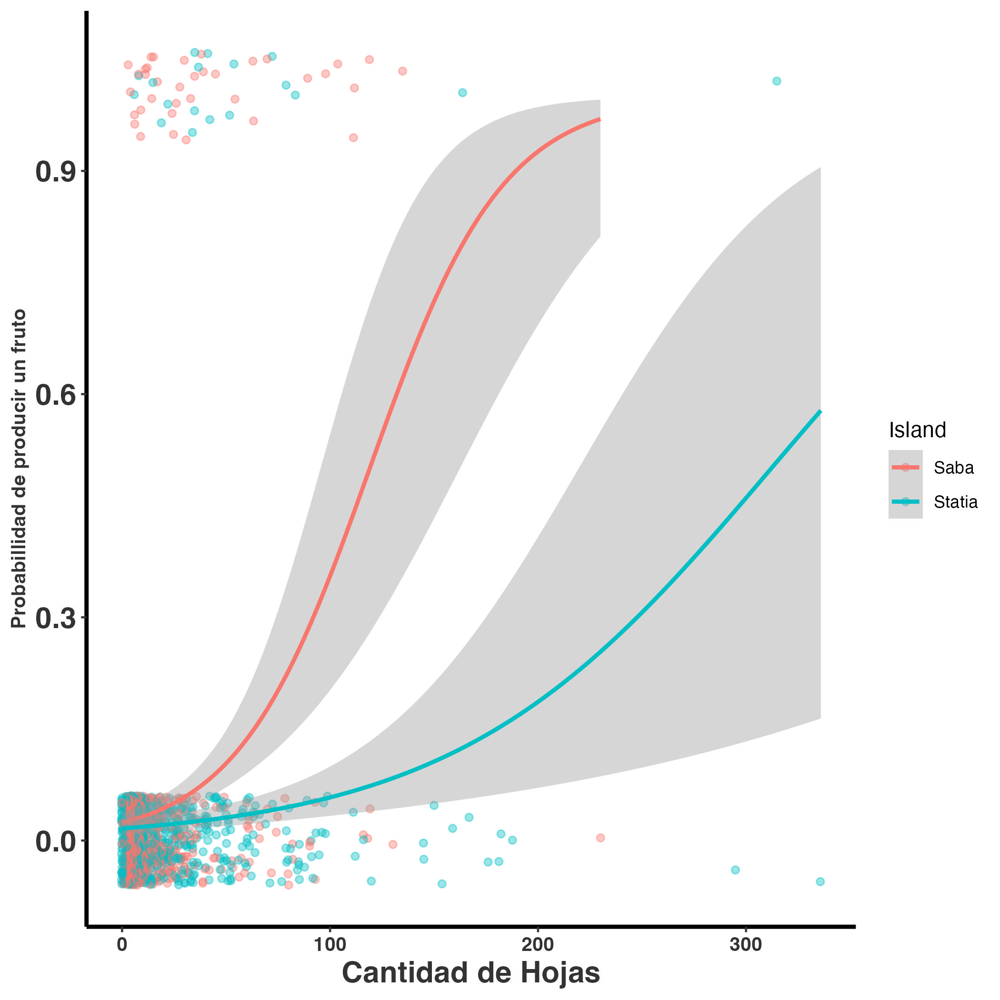

Code
library(Rage)
library(tidyverse)Warning: package 'ggplot2' was built under R version 4.5.2Warning: package 'readr' was built under R version 4.5.2Code
library(gt)library(Rage)
library(tidyverse)Warning: package 'ggplot2' was built under R version 4.5.2Warning: package 'readr' was built under R version 4.5.2library(gt)Toda población de organismos depende de la reproducción para su crecimiento; sin ella, la población no puede aumentar. Por esta razón, la reproducción es un proceso esencial para evaluar el crecimiento poblacional y determinar si el reclutamiento es suficiente para sostener dicho crecimiento. En el caso de las plantas, la reproducción puede ser sexual o vegetativa. Cuando se considera el crecimiento vegetativo, es necesario incorporar una matriz de clonación. Sin embargo, en este capítulo nos enfocaremos únicamente en la reproducción sexual, que es la más común en estudios de ecología de poblaciones.
La forma en que se obtiene e integra la reproducción en los modelos de crecimiento poblacional es crucial, ya que su incorporación puede influir en los resultados y en las conclusiones derivadas del modelo. Por ello, comenzaremos describiendo errores frecuentes en el uso de matrices de transición para calcular la fecundidad.
El primer paso para calcular la fecundidad consiste en definir las clases de edad o tamaño de los individuos. Estas clases agrupan organismos con características similares en términos de edad o tamaño. Por ejemplo, en una población de peces, las clases pueden ser: juveniles, adultos jóvenes y adultos viejos; mientras que en plantas, las clases suelen ser: plántulas, juveniles y adultos. Si la primera etapa del modelo corresponde a “plántula”, el reclutamiento debe contabilizar las “nuevas plántulas” que ingresan a la población en cada periodo. Es fundamental que la etapa reproductiva se mida en la misma escala y periodo que las demás etapas.
Un error común es calcular la fecundidad usando el número de semillas producidas cuando la primera etapa del modelo son plántulas. En este caso, la fecundidad debe expresarse en términos de plántulas, no de semillas. Para ello, es necesario convertir la cantidad de semillas en plántulas mediante una tasa de germinación o de supervivencia.
La fecundidad en orquídeas se refiere a la capacidad reproductiva efectiva de una población, evaluada a través de una serie de eventos: producción de flores, éxito en la polinización, formación de frutos, germinación de semillas y establecimiento de plántulas. En consecuencia, la fecundidad constituye un conjunto de procesos que determinan la viabilidad poblacional a largo plazo. Aunque puede parecer un mecanismo sencillo, en realidad es complejo, ya que depende de múltiples factores como la disponibilidad de recursos, competencia entre individuos, depredación y enfermedades.
El proceso inicia con la producción de flores, lo que implica una inversión significativa de nutrientes y agua acumulados por la planta. Además, las flores desarrollan atributos específicos para maximizar la probabilidad de polinización, tales como color, aroma, néctar y polen. Estos rasgos, sin embargo, son costosos en términos energéticos, por lo que su expresión debe ser cuidadosamente optimizada. En algunos casos, los costos reproductivos son tan elevados que pueden comprometer la supervivencia de la planta.
Diversos estudios ilustran este fenómeno. Por ejemplo, en la orquídea Comparettia falcata (Meléndez-Ackerman, Ackerman & Rodriguez-Robles, 2000), la polinización manual mostró una correlación positiva entre el número de flores producidas y el porcentaje de frutos abortados. En Spiranthes spiralis, un año con alta producción floral se tradujo en más del 80% de individuos en estado vegetativo al año siguiente (Willems & Dorland, 2000). De manera similar, en la orquídea perenne Cypripedium acaule se observó una reducción en la probabilidad de florecer y en el tamaño foliar en la temporada posterior (Primack & Stacy, 1998). Otro caso se reportó en Encyclia krugii, donde el incremento en la producción de frutos se compensó en la siguiente temporada con menor crecimiento vegetativo (reducción en tamaño de hojas, número de flores, inflorescencias y mayor aborto de frutos) (Ackerman, 1989).
Estos hallazgos sugieren que cada ciclo reproductivo requiere un periodo de recuperación para que la planta acumule los nutrientes necesarios para la siguiente temporada. Por lo tanto, un alto índice reproductivo —y el consecuente costo energético— puede representar una desventaja significativa, especialmente en especies con reservas limitadas.
La familia Orchidaceae exhibe una notable diversidad en sus sistemas reproductivos, incluyendo especies autógamas y alógamas (Willmer, 2011; Bateman, 2020). Aunque muchas orquídeas presentan barreras físicas o genéticas que limitan la autopolinización (por ejemplo, el rostelo o la incompatibilidad genética), se ha documentado que varias especies pueden utilizar su propio polen para producir frutos y semillas viables (Ackerman et al., 2023). De hecho, Catling reporta al menos 350 especies en las que alguna población se autopoliniza (Catling, 1990). Se estima que aproximadamente el 31% de las especies de orquídeas producen frutos mediante autopolinización (Evans & Jacquemyn, 2020), siendo esta estrategia más frecuente en especies con distribución geográfica restringida o en ambientes con escasez de polinizadores (Suetsugu, 2015).
Es importante destacar que la autopolinización no implica necesariamente autogamia estricta; la mayoría de las orquídeas presentan grados variables de autogamia facultativa (Tałałaj et al., 2017). Este tipo de autopolinización se ha observado bajo condiciones de estrés abiótico o disturbios antropogénicos (Talalaj & Skierczynski, 2015; Tałałaj et al., 2017). Por ejemplo, las flores del género Epipactis muestran adaptaciones morfológicas que facilitan la autopolinización para asegurar la producción de semillas. Si bien la autogamia garantiza la formación de frutos, estos suelen ser más pequeños y contener menos semillas, con menor viabilidad (semillas sin embrión, embriones inviables, protocormos albinos) (Tremblay et al., 2005; Paiva Neto et al., 2022). Este fenómeno se asocia con la autocompatibilidad genética, documentada en más de 750 especies de orquídeas, incluyendo géneros como Chondrorhyncha, Coelogyne, Dendrobium, Lycaste, Notylia y Oncidium (Johnson & Edwards, 2000; Tremblay et al., 2005; Barreda-Castillo et al., 2024).
Por otro lado, la polinización cruzada incrementa el éxito reproductivo al introducir diversidad genética y superar mecanismos de auto-incompatibilidad (Zhang et al., 2021). Aunque las especies autocompatibles suelen producir más frutos (Caballero-Villalobos et al., 2017), muchas orquídeas dependen exclusivamente de la polinización cruzada (Zhang et al., 2021). Por ejemplo, en la subfamilia Epidendroideae existe un alto número de especies autoestériles, mientras que en Vanilloideae y Cypripedioideae se observa producción de frutos por autopolinización, a pesar de que su morfología floral sugiere polinización cruzada (Suetsugu & Fukushima, 2014; Lopes et al., 2022).
Algunas especies presentan autopolinización estricta mediante flores cleistógamas, que nunca se abren pero producen frutos fértiles, como en Lepanthes dodiana. Esta estrategia es común en plantas colonizadoras o adaptadas a ambientes extremos, donde la ausencia de polinizadores o individuos cercanos limita la polinización cruzada (Barreda-Castillo et al., 2024). La autogamia, además, requiere menos inversión energética al no producir recompensas florales (Eckert & Herlihy, 2004), similar a las especies que emplean polinización por engaño, donde la ausencia de recompensas se traduce en menor éxito reproductivo (Golubov & Mandujano, 2009).
Se estima que aproximadamente el 65% de las especies de Orchidaceae ofrecen algún tipo de recompensa floral (Llabrés Fernández). El néctar constituye la recompensa más común para atraer polinizadores (Neiland & Wilcock, 1998); sin embargo, su producción pudiese implicar un elevado costo energético para la planta, lo que puede limitar el desarrollo de otras estructuras. Ante esta restricción, muchas orquídeas han evolucionado mecanismos de polinización por engaño, estrategia presente en cerca de un tercio de las especies (entre 6,000 y 8,000) (Dafni, 1983; Ackerman, 1989; Tremblay et al., 2005; Case & Bradford, 2009). Estas especies no ofrecen recompensa alguna, lo que reduce el gasto energético. La ausencia de recompensas permite a las orquídeas con polinización por engaño invertir recursos en otras características, como mayor número de flores, incremento en la altura de la planta y en el tamaño de la inflorescencia (Henneresse, Wesselingh & Tyteca, 2017; Scopece et al., 2017), rasgos que aumentan la atracción visual y la frecuencia de visitas de polinizadores (Peakall, 1989; Burd, 1995; Aragón & Ackerman, 2004; Grindeland, Sletvold & Ims, 2005; Li et al., 2011; Sletvold & Ågren, 2011). Tanto la autogamia como la polinización por engaño requieren menor inversión energética al no producir recompensas (Eckert & Herlihy, 2004); sin embargo, esta estrategia suele traducirse en menor éxito reproductivo. De hecho, se ha reportado que las orquídeas que emplean polinización por engaño producen, en promedio, solo la mitad de frutos en comparación con aquellas que ofrecen recompensas (Johnson & Bond, 1997; Neiland & Wilcock, 1998; Tremblay et al., 2005; Jersáková, Johnson & Kindlmann, 2006).
En los análisis de demografía poblacional, la fecundidad se ha estimado a distintos niveles: número de flores, frutos, semillas o plántulas. Algunos estudios la calculan considerando la cantidad de flores producidas por planta en relación con el número de individuos en la población, mientras que otros proponen que la producción de frutos es el indicador más preciso del éxito reproductivo (Proctor & Harder, 1994).
Por ejemplo, en Dracula chimaera la fecundidad se determinó calculando la probabilidad de que una planta con flor desarrollara fruto, es decir, el número de frutos presentes en cada etapa dividido entre el total de plantas de esa misma etapa. Sin embargo, es importante subrayar que la producción de frutos no garantiza la calidad de las semillas o la presencia de semillas, por ejemplo en la especies Phychilis krugii en Puerto Rico, la autopolinización resulta en producción de un fruto pero la semillas estan sin embrión. Ademas hay muchos factores que influye directamente en la germinación y, a largo plazo, en el establecimiento efectivo de nuevas plántulas.
El número de semillas por fruto en las orquídeas puede variar desde miles hasta millones; sin embargo, no todas son viables. Es ampliamente reconocido que una gran proporción corresponde a semillas vacías (sin embrión), mientras que otras presentan embriones no funcionales. Esto indica que no todas las semillas producidas tienen la capacidad de originar un nuevo individuo. Por esta razón, algunos estudios han incorporado la viabilidad de las semillas como un nivel adicional para estimar la fecundidad, tal como se realizó en Laelia autumnalis (Emeterio-Lara; comunicación personal).
Aunque una planta puede producir una gran cantidad de semillas viables, tras la dispersión estas enfrentan múltiples factores que limitan su éxito. Las condiciones abióticas —como temperatura, luz y humedad—, junto con factores bióticos, como las características del forófito, la disponibilidad de hongos endófitos y la presión de herbívoros o depredadores de semillas y plántulas, influyen tanto en la micorrización como en la germinación y el establecimiento de nuevas plántulas (Dressler, 1993).
Estos elementos definen micrositios específicos para la germinación, que pueden incluir fisuras en la corteza de un árbol, mechones de musgo, superficies de raíces vivas o acumulaciones de humus (Rasmussen et al., 2015). A medida que las semillas atraviesan las distintas etapas de germinación —desde la imbibición hasta el desarrollo de plántulas con dos hojas (Arditti, 1967)—, la mortalidad se mantiene en niveles muy altos. Por ejemplo, Batty et al. (Batty et al., 2001) estimaron que, en Caladenia arenicola, de aproximadamente 34,500 semillas, menos del 1% alcanzó la etapa de plántula capaz de sobrevivir a la primera sequía estival.
El reclutamiento se define como el número de plántulas que logran establecerse en el forófito y poseen el potencial de sobrevivir para avanzar a la siguiente etapa demográfica (juvenil). Las orquídeas presentan tasas de reclutamiento particularmente bajas (Larson & Batson, 1978; Zotz, 1998; Winkler & Hietz, 2001; Garcı́a-Soriano, 2003), debido a factores como la susceptibilidad al estrés hídrico durante la estación seca (Benzing, 1981; Hernández-Apolinar, 1992; Larson, 1992; Hietz, 1997; Tremblay, 1997; Zotz, 1998; Mondragón, 2000; Garcı́a-Soriano, 2003), enfermedades y depredación. Por ejemplo, en Erycina crista-galli un individuo adulto produce en promedio 0.033 plántulas/año, mientras que en Guarianthe aurantiaca un individuo reproductivo genera menos de un nuevo individuo por año.
En los modelos demográficos, alcanzar esta fase es crucial, ya que representa el valor neto de fecundidad: el número de nuevos individuos que conformarán la siguiente generación en una población natural. Sin embargo, estimar la fecundidad hasta la etapa de plántula es uno de los mayores retos, principalmente por la dificultad de asegurar la identidad de la especie. Un aspecto clave es la proximidad a la planta madre, dado que, aunque el viento favorece la dispersión a larga distancia, la mayoría de las semillas se depositan cerca de ella (Chung, Nason & Chung, 2004; Trapnell, Hamrick & Nason, 2004; Jersáková & Malinová, 2007).
A pesar de estas limitaciones, existen estudios que han registrado plántulas sobrevivientes tras un periodo (generalmente un año). Ejemplos incluyen Brassavola cucullata (Ackerman et al., 2020) y E. crista-galli (Maldonado Flores et al., 2006), donde la fecundidad se estimó dividiendo el número de nuevos reclutas observados en campo entre el número máximo de frutos reportados durante el periodo de estudio. En otros casos, como Guarianthe aurantiaca, se calculó comparando los reclutamientos entre años consecutivos (Mondragón, 2009). Estos datos proporcionan estimaciones más precisas para proyectar la dinámica poblacional y diseñar estrategias de conservación.

Tabla de algunos ejemplos de fecundidad en orquídeas, donde se muestra la especie, el índice de fecundidad y la referencia del estudio.
| Especie | Indice de Fecundidad | Referencia |
|---|---|---|
| Lepanthes eltoroensis | Cantidad de Plántulas / Adultos reproductivos | Tremblay & Hutchings (2003) |
| Erycina crista-galli | 0.033 plántulas/año | Maldonado Flores (2005) |
| Encyclia tampensis | 0.1 plántulas/fruto | Larson (1992) |
| Guarianthe aurantiaca | <1 plántula/año | Mondragón (2009) |
Los estudios disponibles indican que las orquídeas presentan un crecimiento lento, requiriendo entre 8 y 19 años para alcanzar la madurez reproductiva (Hernández-Apolinar, 1992; Larson, 1992; Zotz, 1995, 1998). Sin embargo, existen excepciones, como las orquídeas miniatura o de ramilla (principalmente Pleurothalliinae), que pueden madurar en uno o pocos años (Chase, 1987).
Para estimar el crecimiento y la edad reproductiva en Lycaste aromatica, se ha utilizado la producción regular de pseudobulbos, los cuales permanecen varios años en la planta. Con base en este patrón, se predice que Encyclia tampensis alcanza la floración aproximadamente a los 15 años. No obstante, bajo condiciones controladas de cultivo, la fase de pre-bulbo puede durar entre 0.5 y 2 años, y la primera floración ocurrir en tan solo 5 a 6 años (H. Lutero, comunicación personal).

Un caso interesante se observa en Brassavola cucullata, una especie rupícola y epífita de las Antillas Menores. En esta orquídea, los pseudobulbos presentan hojas lanceoladas, y la probabilidad de floración no depende de la longitud de las hojas, sino de la cantidad de hojas por individuo. De hecho, el número estimado de hojas constituye un buen predictor de la capacidad de una planta para producir flores, aunque se han registrado diferencias en esta relación entre las poblaciones de las islas Saba y San Eustaquio.
En este ejemplo, la primera fila de la matriz representa la fecundidad de la población en la posición (3,1) (columna, fila), correspondiente al número promedio de semillas producidas por un individuo adulto. Sin embargo, la fecundidad en modelos demográficos debe expresarse en términos de plántulas, no de semillas. Por ello, es necesario convertir la cantidad de semillas producidas en plántulas mediante una tasa de germinación o una tasa de supervivencia hasta la etapa de plántula. De lo contrario, el cálculo presentará un sesgo, ya que se estaría estimando fecundidad con base en semillas, sin considerar su capacidad real de generar nuevos individuos.
matA_sem <- rbind(
c(0.0, 0.0, 1000), # fecundidad 1000 semillas en promedio por adulto
c(0.5, 0.0, 0.0),
c(0.0, 0.4, 0.0)
)Visualizamos el ciclo de vida de la población con la función plot_life_cycle() de la librería Rage:
etapas <- c("plántula", "juvenil", "adulto")
plot_life_cycle(matA_sem, stages=etapas, fontsize = 5)Una alternativa para estimar la fecundidad en términos demográficos consiste en calcular el número de nuevas plántulas que se incorporarán en el siguiente periodo, utilizando una tasa de germinación y una tasa de supervivencia hasta la etapa de plántula.
Por ejemplo, si:
entonces la fecundidad en términos de plántulas se calcula como:
\[\text{Fecundidad} = \frac{(1000 \times 0.5 \times 0.2)}{75} = 1.33\]
Esto significa que, en promedio, cada adulto contribuiría con 1.33 plántulas al siguiente periodo.
Por consecuencia la matriz cambia a:
matA_pl <- rbind(
c(0.0, 0.0, 1.333),
c(0.5, 0.0, 0.0),
c(0.0, 0.4, 0.0)
)
etapas <- c("plántula", "juvenil", "adulto")
plot_life_cycle(matA_pl, stages = etapas, fontsize = 5)Otra alternativa consiste en calcular la fecundidad directamente en función del reclutamiento observado, utilizando el número de plántulas establecidas en el periodo siguiente. Este método es útil cuando no se dispone de información sobre la producción de semillas ni sobre sus tasas de germinación y supervivencia.
La estimación se obtiene dividiendo el número total de plántulas registradas en el periodo t2t_2t2 entre el número de adultos presentes en el periodo anterior \(t_1\). Por ejemplo, si en \(t_2t\) se contabilizan 50 nuevas plántulas y en \(t_1\) había 100 adultos, la fecundidad sería:
\[\text{Fecundidad} = \frac{50}{100} = 0.5\]
Esto indica que, en promedio, cada adulto contribuyó con 0.5 plántulas a la siguiente generación.
matA_pl2 <- rbind(
c(0.0, 0.0, 0.5), # fecundidad 0.5 plántulas en promedio por adulto
c(0.5, 0.0, 0.0),
c(0.0, 0.4, 0.0)
)
etapas <- c("plántula", "juvenil", "adulto")
plot_life_cycle(matA_pl2, stages = etapas, fontsize = 5)Para estimar la fecundidad en modelos poblacionales, es necesario asumir ciertos supuestos fundamentales:
Es importante reconocer que no existe un método perfecto para calcular la fecundidad. El procedimiento descrito aquí es útil cuando no se dispone de información sobre la cantidad de semillas producidas ni sobre su supervivencia y germinación. Sin embargo, siempre existe la posibilidad de que algunas semillas germinen en otros periodos o provengan de sitios externos, lo que introduce sesgos. Mientras estos sesgos sean mínimos, las estimaciones pueden considerarse aceptables para expresar la fecundidad en términos de plántulas.
El escenario ideal sería seguir todo el proceso reproductivo: cuantificar el esfuerzo reproductivo de cada individuo, registrar la producción de semillas y monitorear su germinación en campo. No obstante, este seguimiento completo es prácticamente imposible, por lo que se deben asumir ciertos procesos biológicos, entre ellos:
| ::: {.hidden-note} |
| ::: |
| :::{#quarto-book-math .hidden} \(e = mC^2\) ::: |
| :::{#quarto-navigation-envelope .hidden} Diagnostico Poblacional Diagnostico Poblacional Suma de matrices Calcular transiciones Capítulos Home Introducción Ciclos de vida Recopilación de datos en el campo Calcular transiciones Calcular fecundidad Suma de matrices Estimados bayesianos de MPP Crecimiento poblacional Propriedades de las matriz Elasticidad Dinámica de transiciones Funciones de transferencia Experimento de respuesta de tabla de vida Método de simulaciones Estudios Evolutivos COMPADRE y Orquídeas Rage y Orquídeas Traducción del protocolo de información Impacto de datos sin sentido biológico Conclusión Historia Historia breve de la demografía en orquídeas Carl Olaf Tamm Apéndices Lista de Especies de Orquídeas en COMPADRE Hoja de datos Datos Agradecimientos Capítulos Calcular fecundidad |
| :::{.hidden .quarto-markdown-envelope-contents render-id=“Zm9vdGVyLWxlZnQ=”} © Diagnostico Poblacional; Copyright 2025, Raymond L. Tremblay ::: |
| :::{.hidden .quarto-markdown-envelope-contents render-id=“Zm9vdGVyLXJpZ2h0”} Esta página fue creado ❤️ y Quarto. ::: |
| ::: |
| :::{#quarto-meta-markdown .hidden} Diagnostico Poblacional Diagnostico Poblacional Diagnostico Poblacional Diagnostico Poblacional ::: |
| ::: {.quarto-embedded-source-code} ```````````````````{.markdown shortcodes=“false”} # Fecundidad {#MatricesF} |
| ## Por: Aucencia Emeterio-Lara y Raymond L Tremblay |
| #### Librerías de R requeridas para el siguiente módulo |
| ```{r Trans1, message=FALSE} |
| library(Rage) library(tidyverse) library(gt) |
| ``` |
| ## Introducción |
| Toda población de organismos depende de la reproducción para su crecimiento; sin ella, la población no puede aumentar. Por esta razón, la reproducción es un proceso esencial para evaluar el crecimiento poblacional y determinar si el reclutamiento es suficiente para sostener dicho crecimiento. En el caso de las plantas, la reproducción puede ser sexual o vegetativa. Cuando se considera el crecimiento vegetativo, es necesario incorporar una matriz de clonación. Sin embargo, en este capítulo nos enfocaremos únicamente en la reproducción sexual, que es la más común en estudios de ecología de poblaciones. |
| La forma en que se obtiene e integra la reproducción en los modelos de crecimiento poblacional es crucial, ya que su incorporación puede influir en los resultados y en las conclusiones derivadas del modelo. Por ello, comenzaremos describiendo errores frecuentes en el uso de matrices de transición para calcular la fecundidad. |
| El primer paso para calcular la fecundidad consiste en definir las clases de edad o tamaño de los individuos. Estas clases agrupan organismos con características similares en términos de edad o tamaño. Por ejemplo, en una población de peces, las clases pueden ser: juveniles, adultos jóvenes y adultos viejos; mientras que en plantas, las clases suelen ser: plántulas, juveniles y adultos. Si la primera etapa del modelo corresponde a “plántula”, el reclutamiento debe contabilizar las “nuevas plántulas” que ingresan a la población en cada periodo. Es fundamental que la etapa reproductiva se mida en la misma escala y periodo que las demás etapas. |
| Un error común es calcular la fecundidad usando el número de semillas producidas cuando la primera etapa del modelo son plántulas. En este caso, la fecundidad debe expresarse en términos de plántulas, no de semillas. Para ello, es necesario convertir la cantidad de semillas en plántulas mediante una tasa de germinación o de supervivencia. |
| ## La fecundidad de las orquídeas en la demografía poblacional |
| La fecundidad en orquídeas se refiere a la capacidad reproductiva efectiva de una población, evaluada a través de una serie de eventos: producción de flores, éxito en la polinización, formación de frutos, germinación de semillas y establecimiento de plántulas. En consecuencia, la fecundidad constituye un conjunto de procesos que determinan la viabilidad poblacional a largo plazo. Aunque puede parecer un mecanismo sencillo, en realidad es complejo, ya que depende de múltiples factores como la disponibilidad de recursos, competencia entre individuos, depredación y enfermedades. |
| El proceso inicia con la producción de flores, lo que implica una inversión significativa de nutrientes y agua acumulados por la planta. Además, las flores desarrollan atributos específicos para maximizar la probabilidad de polinización, tales como color, aroma, néctar y polen. Estos rasgos, sin embargo, son costosos en términos energéticos, por lo que su expresión debe ser cuidadosamente optimizada. En algunos casos, los costos reproductivos son tan elevados que pueden comprometer la supervivencia de la planta. |
| Diversos estudios ilustran este fenómeno. Por ejemplo, en la orquídea Comparettia falcata (Meléndez-Ackerman, Ackerman & Rodriguez-Robles, 2000), la polinización manual mostró una correlación positiva entre el número de flores producidas y el porcentaje de frutos abortados. En Spiranthes spiralis, un año con alta producción floral se tradujo en más del 80% de individuos en estado vegetativo al año siguiente (Willems & Dorland, 2000). De manera similar, en la orquídea perenne Cypripedium acaule se observó una reducción en la probabilidad de florecer y en el tamaño foliar en la temporada posterior (Primack & Stacy, 1998). Otro caso se reportó en Encyclia krugii, donde el incremento en la producción de frutos se compensó en la siguiente temporada con menor crecimiento vegetativo (reducción en tamaño de hojas, número de flores, inflorescencias y mayor aborto de frutos) (Ackerman, 1989). |
| Estos hallazgos sugieren que cada ciclo reproductivo requiere un periodo de recuperación para que la planta acumule los nutrientes necesarios para la siguiente temporada. Por lo tanto, un alto índice reproductivo —y el consecuente costo energético— puede representar una desventaja significativa, especialmente en especies con reservas limitadas. |
| ## La polinización en las orquídeas |
| La familia Orchidaceae exhibe una notable diversidad en sus sistemas reproductivos, incluyendo especies autógamas y alógamas (Willmer, 2011; Bateman, 2020). Aunque muchas orquídeas presentan barreras físicas o genéticas que limitan la autopolinización (por ejemplo, el rostelo o la incompatibilidad genética), se ha documentado que varias especies pueden utilizar su propio polen para producir frutos y semillas viables (Ackerman et al., 2023). De hecho, Catling reporta al menos 350 especies en las que alguna población se autopoliniza (Catling, 1990). Se estima que aproximadamente el 31% de las especies de orquídeas producen frutos mediante autopolinización (Evans & Jacquemyn, 2020), siendo esta estrategia más frecuente en especies con distribución geográfica restringida o en ambientes con escasez de polinizadores (Suetsugu, 2015). |
| Es importante destacar que la autopolinización no implica necesariamente autogamia estricta; la mayoría de las orquídeas presentan grados variables de autogamia facultativa (Tałałaj et al., 2017). Este tipo de autopolinización se ha observado bajo condiciones de estrés abiótico o disturbios antropogénicos (Talalaj & Skierczynski, 2015; Tałałaj et al., 2017). Por ejemplo, las flores del género Epipactis muestran adaptaciones morfológicas que facilitan la autopolinización para asegurar la producción de semillas. Si bien la autogamia garantiza la formación de frutos, estos suelen ser más pequeños y contener menos semillas, con menor viabilidad (semillas sin embrión, embriones inviables, protocormos albinos) (Tremblay et al., 2005; Paiva Neto et al., 2022). Este fenómeno se asocia con la autocompatibilidad genética, documentada en más de 750 especies de orquídeas, incluyendo géneros como Chondrorhyncha, Coelogyne, Dendrobium, Lycaste, Notylia y Oncidium (Johnson & Edwards, 2000; Tremblay et al., 2005; Barreda-Castillo et al., 2024). |
| Por otro lado, la polinización cruzada incrementa el éxito reproductivo al introducir diversidad genética y superar mecanismos de auto-incompatibilidad (Zhang et al., 2021). Aunque las especies autocompatibles suelen producir más frutos (Caballero-Villalobos et al., 2017), muchas orquídeas dependen exclusivamente de la polinización cruzada (Zhang et al., 2021). Por ejemplo, en la subfamilia Epidendroideae existe un alto número de especies autoestériles, mientras que en Vanilloideae y Cypripedioideae se observa producción de frutos por autopolinización, a pesar de que su morfología floral sugiere polinización cruzada (Suetsugu & Fukushima, 2014; Lopes et al., 2022). |
| Algunas especies presentan autopolinización estricta mediante flores cleistógamas, que nunca se abren pero producen frutos fértiles, como en Lepanthes dodiana. Esta estrategia es común en plantas colonizadoras o adaptadas a ambientes extremos, donde la ausencia de polinizadores o individuos cercanos limita la polinización cruzada (Barreda-Castillo et al., 2024). La autogamia, además, requiere menos inversión energética al no producir recompensas florales (Eckert & Herlihy, 2004), similar a las especies que emplean polinización por engaño, donde la ausencia de recompensas se traduce en menor éxito reproductivo (Golubov & Mandujano, 2009). |
| Se estima que aproximadamente el 65% de las especies de Orchidaceae ofrecen algún tipo de recompensa floral (Llabrés Fernández). El néctar constituye la recompensa más común para atraer polinizadores (Neiland & Wilcock, 1998); sin embargo, su producción pudiese implicar un elevado costo energético para la planta, lo que puede limitar el desarrollo de otras estructuras. Ante esta restricción, muchas orquídeas han evolucionado mecanismos de polinización por engaño, estrategia presente en cerca de un tercio de las especies (entre 6,000 y 8,000) (Dafni, 1983; Ackerman, 1989; Tremblay et al., 2005; Case & Bradford, 2009). Estas especies no ofrecen recompensa alguna, lo que reduce el gasto energético. La ausencia de recompensas permite a las orquídeas con polinización por engaño invertir recursos en otras características, como mayor número de flores, incremento en la altura de la planta y en el tamaño de la inflorescencia (Henneresse, Wesselingh & Tyteca, 2017; Scopece et al., 2017), rasgos que aumentan la atracción visual y la frecuencia de visitas de polinizadores (Peakall, 1989; Burd, 1995; Aragón & Ackerman, 2004; Grindeland, Sletvold & Ims, 2005; Li et al., 2011; Sletvold & Ågren, 2011). Tanto la autogamia como la polinización por engaño requieren menor inversión energética al no producir recompensas (Eckert & Herlihy, 2004); sin embargo, esta estrategia suele traducirse en menor éxito reproductivo. De hecho, se ha reportado que las orquídeas que emplean polinización por engaño producen, en promedio, solo la mitad de frutos en comparación con aquellas que ofrecen recompensas (Johnson & Bond, 1997; Neiland & Wilcock, 1998; Tremblay et al., 2005; Jersáková, Johnson & Kindlmann, 2006). |
| ## Producción de frutos en orquídeas |
| En los análisis de demografía poblacional, la fecundidad se ha estimado a distintos niveles: número de flores, frutos, semillas o plántulas. Algunos estudios la calculan considerando la cantidad de flores producidas por planta en relación con el número de individuos en la población, mientras que otros proponen que la producción de frutos es el indicador más preciso del éxito reproductivo (Proctor & Harder, 1994). |
| Por ejemplo, en Dracula chimaera la fecundidad se determinó calculando la probabilidad de que una planta con flor desarrollara fruto, es decir, el número de frutos presentes en cada etapa dividido entre el total de plantas de esa misma etapa. Sin embargo, es importante subrayar que la producción de frutos no garantiza la calidad de las semillas o la presencia de semillas, por ejemplo en la especies Phychilis krugii en Puerto Rico, la autopolinización resulta en producción de un fruto pero la semillas estan sin embrión. Ademas hay muchos factores que influye directamente en la germinación y, a largo plazo, en el establecimiento efectivo de nuevas plántulas. |
| ## Viabilidad de las semillas |
| El número de semillas por fruto en las orquídeas puede variar desde miles hasta millones; sin embargo, no todas son viables. Es ampliamente reconocido que una gran proporción corresponde a semillas vacías (sin embrión), mientras que otras presentan embriones no funcionales. Esto indica que no todas las semillas producidas tienen la capacidad de originar un nuevo individuo. Por esta razón, algunos estudios han incorporado la viabilidad de las semillas como un nivel adicional para estimar la fecundidad, tal como se realizó en Laelia autumnalis (Emeterio-Lara; comunicación personal). |
| ## Germinación |
| Aunque una planta puede producir una gran cantidad de semillas viables, tras la dispersión estas enfrentan múltiples factores que limitan su éxito. Las condiciones abióticas —como temperatura, luz y humedad—, junto con factores bióticos, como las características del forófito, la disponibilidad de hongos endófitos y la presión de herbívoros o depredadores de semillas y plántulas, influyen tanto en la micorrización como en la germinación y el establecimiento de nuevas plántulas (Dressler, 1993). |
| Estos elementos definen micrositios específicos para la germinación, que pueden incluir fisuras en la corteza de un árbol, mechones de musgo, superficies de raíces vivas o acumulaciones de humus (Rasmussen et al., 2015). A medida que las semillas atraviesan las distintas etapas de germinación —desde la imbibición hasta el desarrollo de plántulas con dos hojas (Arditti, 1967)—, la mortalidad se mantiene en niveles muy altos. Por ejemplo, Batty et al. (Batty et al., 2001) estimaron que, en Caladenia arenicola, de aproximadamente 34,500 semillas, menos del 1% alcanzó la etapa de plántula capaz de sobrevivir a la primera sequía estival. |
| ## Reclutamiento |
| El reclutamiento se define como el número de plántulas que logran establecerse en el forófito y poseen el potencial de sobrevivir para avanzar a la siguiente etapa demográfica (juvenil). Las orquídeas presentan tasas de reclutamiento particularmente bajas (Larson & Batson, 1978; Zotz, 1998; Winkler & Hietz, 2001; Garcı́a-Soriano, 2003), debido a factores como la susceptibilidad al estrés hídrico durante la estación seca (Benzing, 1981; Hernández-Apolinar, 1992; Larson, 1992; Hietz, 1997; Tremblay, 1997; Zotz, 1998; Mondragón, 2000; Garcı́a-Soriano, 2003), enfermedades y depredación. Por ejemplo, en Erycina crista-galli un individuo adulto produce en promedio 0.033 plántulas/año, mientras que en Guarianthe aurantiaca un individuo reproductivo genera menos de un nuevo individuo por año. |
| En los modelos demográficos, alcanzar esta fase es crucial, ya que representa el valor neto de fecundidad: el número de nuevos individuos que conformarán la siguiente generación en una población natural. Sin embargo, estimar la fecundidad hasta la etapa de plántula es uno de los mayores retos, principalmente por la dificultad de asegurar la identidad de la especie. Un aspecto clave es la proximidad a la planta madre, dado que, aunque el viento favorece la dispersión a larga distancia, la mayoría de las semillas se depositan cerca de ella (Chung, Nason & Chung, 2004; Trapnell, Hamrick & Nason, 2004; Jersáková & Malinová, 2007). |
| A pesar de estas limitaciones, existen estudios que han registrado plántulas sobrevivientes tras un periodo (generalmente un año). Ejemplos incluyen Brassavola cucullata (Ackerman et al., 2020) y E. crista-galli (Maldonado Flores et al., 2006), donde la fecundidad se estimó dividiendo el número de nuevos reclutas observados en campo entre el número máximo de frutos reportados durante el periodo de estudio. En otros casos, como Guarianthe aurantiaca, se calculó comparando los reclutamientos entre años consecutivos (Mondragón, 2009). Estos datos proporcionan estimaciones más precisas para proyectar la dinámica poblacional y diseñar estrategias de conservación. |
| ::: {style=“float: none; margin: 10px; width: 100%;”} ::: |
Tabla de algunos ejemplos de fecundidad en orquídeas, donde se muestra la especie, el índice de fecundidad y la referencia del estudio.
| Especie | Indice de Fecundidad | Referencia |
|---|---|---|
| Lepanthes eltoroensis | Cantidad de Plántulas / Adultos reproductivos | Tremblay & Hutchings (2003) |
| Erycina crista-galli | 0.033 plántulas/año | Maldonado Flores (2005) |
| Encyclia tampensis | 0.1 plántulas/fruto | Larson (1992) |
| Guarianthe aurantiaca | <1 plántula/año | Mondragón (2009) |
Los estudios disponibles indican que las orquídeas presentan un crecimiento lento, requiriendo entre 8 y 19 años para alcanzar la madurez reproductiva (Hernández-Apolinar, 1992; Larson, 1992; Zotz, 1995, 1998). Sin embargo, existen excepciones, como las orquídeas miniatura o de ramilla (principalmente Pleurothalliinae), que pueden madurar en uno o pocos años (Chase, 1987).
Para estimar el crecimiento y la edad reproductiva en Lycaste aromatica, se ha utilizado la producción regular de pseudobulbos, los cuales permanecen varios años en la planta. Con base en este patrón, se predice que Encyclia tampensis alcanza la floración aproximadamente a los 15 años. No obstante, bajo condiciones controladas de cultivo, la fase de pre-bulbo puede durar entre 0.5 y 2 años, y la primera floración ocurrir en tan solo 5 a 6 años (H. Lutero, comunicación personal).
Un caso interesante se observa en Brassavola cucullata, una especie rupícola y epífita de las Antillas Menores. En esta orquídea, los pseudobulbos presentan hojas lanceoladas, y la probabilidad de floración no depende de la longitud de las hojas, sino de la cantidad de hojas por individuo. De hecho, el número estimado de hojas constituye un buen predictor de la capacidad de una planta para producir flores, aunque se han registrado diferencias en esta relación entre las poblaciones de las islas Saba y San Eustaquio.
En este ejemplo, la primera fila de la matriz representa la fecundidad de la población en la posición (3,1) (columna, fila), correspondiente al número promedio de semillas producidas por un individuo adulto. Sin embargo, la fecundidad en modelos demográficos debe expresarse en términos de plántulas, no de semillas. Por ello, es necesario convertir la cantidad de semillas producidas en plántulas mediante una tasa de germinación o una tasa de supervivencia hasta la etapa de plántula. De lo contrario, el cálculo presentará un sesgo, ya que se estaría estimando fecundidad con base en semillas, sin considerar su capacidad real de generar nuevos individuos.
quarto-executable-code-5450563D
matA_sem <- rbind(
c(0.0, 0.0, 1000), # fecundidad 1000 semillas en promedio por adulto
c(0.5, 0.0, 0.0),
c(0.0, 0.4, 0.0)
)Visualizamos el ciclo de vida de la población con la función plot_life_cycle() de la librería Rage:
quarto-executable-code-5450563D
etapas <- c("plántula", "juvenil", "adulto")
plot_life_cycle(matA_sem, stages=etapas, fontsize = 5)Una alternativa para estimar la fecundidad en términos demográficos consiste en calcular el número de nuevas plántulas que se incorporarán en el siguiente periodo, utilizando una tasa de germinación y una tasa de supervivencia hasta la etapa de plántula.
Por ejemplo, si:
entonces la fecundidad en términos de plántulas se calcula como:
\[\text{Fecundidad} = \frac{(1000 \times 0.5 \times 0.2)}{75} = 1.33\]
Esto significa que, en promedio, cada adulto contribuiría con 1.33 plántulas al siguiente periodo.
Por consecuencia la matriz cambia a:
quarto-executable-code-5450563D
matA_pl <- rbind(
c(0.0, 0.0, 1.333),
c(0.5, 0.0, 0.0),
c(0.0, 0.4, 0.0)
)
etapas <- c("plántula", "juvenil", "adulto")
plot_life_cycle(matA_pl, stages = etapas, fontsize = 5)Otra alternativa consiste en calcular la fecundidad directamente en función del reclutamiento observado, utilizando el número de plántulas establecidas en el periodo siguiente. Este método es útil cuando no se dispone de información sobre la producción de semillas ni sobre sus tasas de germinación y supervivencia.
La estimación se obtiene dividiendo el número total de plántulas registradas en el periodo t2t_2t2 entre el número de adultos presentes en el periodo anterior \(t_1\). Por ejemplo, si en \(t_2t\) se contabilizan 50 nuevas plántulas y en \(t_1\) había 100 adultos, la fecundidad sería:
\[\text{Fecundidad} = \frac{50}{100} = 0.5\]
Esto indica que, en promedio, cada adulto contribuyó con 0.5 plántulas a la siguiente generación.
quarto-executable-code-5450563D
matA_pl2 <- rbind(
c(0.0, 0.0, 0.5), # fecundidad 0.5 plántulas en promedio por adulto
c(0.5, 0.0, 0.0),
c(0.0, 0.4, 0.0)
)
etapas <- c("plántula", "juvenil", "adulto")
plot_life_cycle(matA_pl2, stages = etapas, fontsize = 5)
Para estimar la fecundidad en modelos poblacionales, es necesario asumir ciertos supuestos fundamentales:
Es importante reconocer que no existe un método perfecto para calcular la fecundidad. El procedimiento descrito aquí es útil cuando no se dispone de información sobre la cantidad de semillas producidas ni sobre su supervivencia y germinación. Sin embargo, siempre existe la posibilidad de que algunas semillas germinen en otros periodos o provengan de sitios externos, lo que introduce sesgos. Mientras estos sesgos sean mínimos, las estimaciones pueden considerarse aceptables para expresar la fecundidad en términos de plántulas.
El escenario ideal sería seguir todo el proceso reproductivo: cuantificar el esfuerzo reproductivo de cada individuo, registrar la producción de semillas y monitorear su germinación en campo. No obstante, este seguimiento completo es prácticamente imposible, por lo que se deben asumir ciertos procesos biológicos, entre ellos:
``````````````````` :::